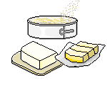

Quesos y Lacteos la Esmeralda
NUESTROS PRODUCTOS
LA ESPECIALIDAD
La especialidad de nuestra empresa es el Queso doble crema, es elaborado en nuestro campo tolimense. Su sabor suave, aroma a leche recién ordeñada, superficie brillante sin cáscara ni fisuras, su consistencia es firme, su textura lisa y su color blanco, sugieren que es un queso fresco, ácido, semigraso y de pasta hilada. Es decir, que en el proceso de elaboración se cambia la estructura del queso para convertirlo en una tela completamente elástica, lisa y brillante. Para lograrlo es necesario estirar cientos de veces una cuajada caliente que puede alcanzar temperaturas cercanas a los 70 grados centígrados, fundiendo las proteínas y ordenando las fibras del queso. Como todos los quesos, la doble crema es muy versátil y se puede usar en cientos de recetas. Por ejemplo, es perfecto para sándwiches, gratinar, preparar pasabocas, pizzas, palitos de queso, acompañar pastas. Finalmente, la vida útil de este queso es de 30 días, aproximadamente, siempre y cuando se mantenga refrigerado. Debe consumirse fresco.
VALORES NUTRICIONALES
Existe infinidad de variedades de queso, todos con un delicioso sabor para acompañar siempre las comidas y nuestra mesa, así podríamos clasificarlos: El origen de la leche y demás materia prima utilizada, Su proceso de elaboración fresco o maduro y Por último, la corteza, la textura interior y la consistencia Nuestros productos aportan entre otros valores nutricionales: Aporta proteínas de alto valor biológico: así como minerales esenciales para un buen funcionamiento de nuestro metabolismo. Los principales son el potasio, el calcio, el hierro, el sodio, el magnesio, el fosforo y el zinc. Contiene vitaminas liposolubles, que son básicamente las mismas que las del resto de otros productos lácteos. Las de mayor presencia en el queso doble crema son las vitaminas del grupo A y la D.
PRECIOS